the boy
A boy sneaks into the kitchen to find his spinning top.

He playfully roams around the kitchen and opens the boxes and blows in the chulha with the fukni. He wants to play with his lattu, but it is lost in the kitchen.
the kitchen
Ghar Jo Hum Piche Chhod Aaye lets you inhabit the body of a child on the day of the Partition. The kitchen was a deliberate choice — it's a space that talks to all your senses at once. The smell of the chulha, the weight of the dabbas, the sound of the fire. You blow into the chulha with a fukni, open the dabbas, poke around. Somewhere in here, your lattu is hidden — and you want it.
the child
Most stories of Partition come through memories — violence, loss, the weight of understanding what happened. We wanted to ask a different question: what was a child doing that day? A child who didn't know. Who was just in the kitchen, looking for his toy.
Outside, something is happening. You have no idea about it. You're looking for your toy.
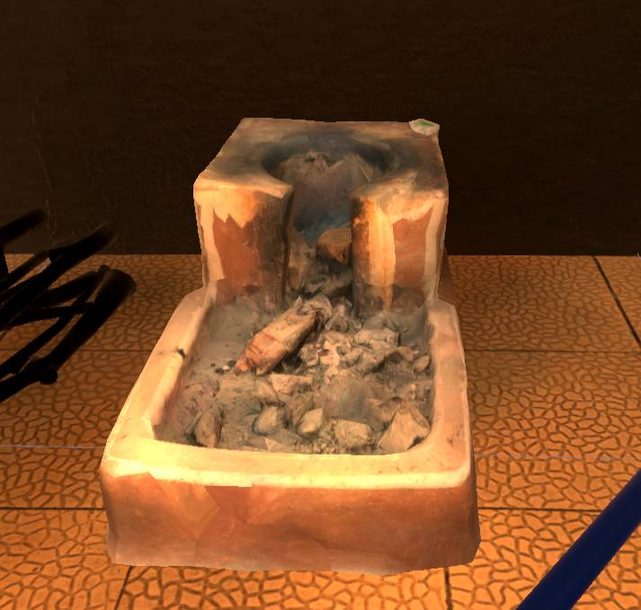
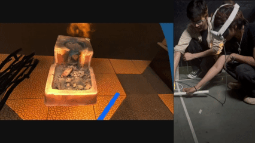
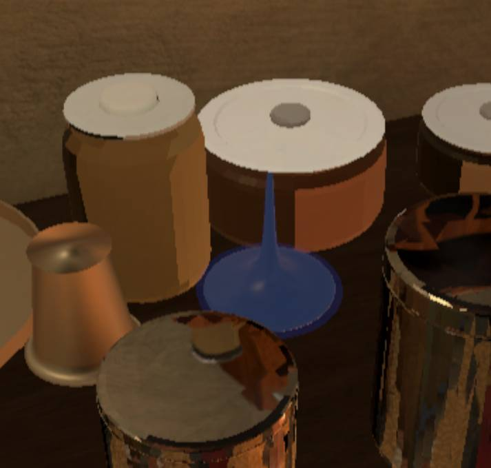
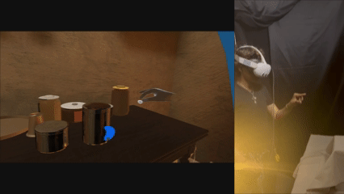
the sensor
After forming the narrative we started getting our hands dirty — figuring out how to transfer parameters from actual fire into Unity so the interaction could respond. We tried a flame sensor first to capture real heat. Irregular readings, didn't work. Then we switched to a CO sensor — it recognised breath. You might wonder why not CO2 — we tried, but it wasn't sensitive enough. CO worked.
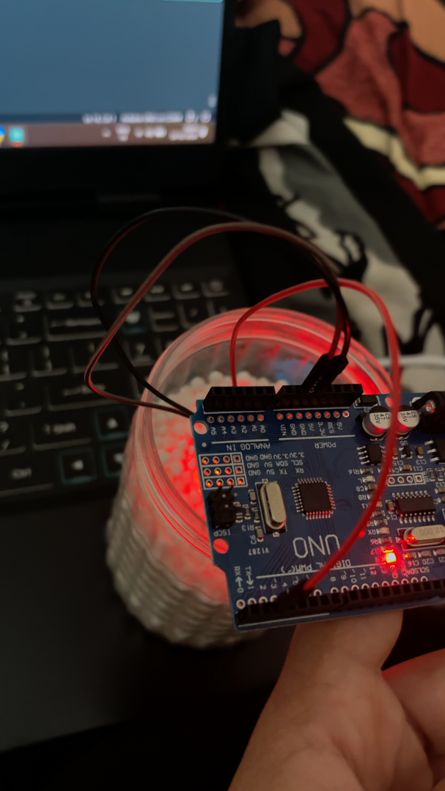
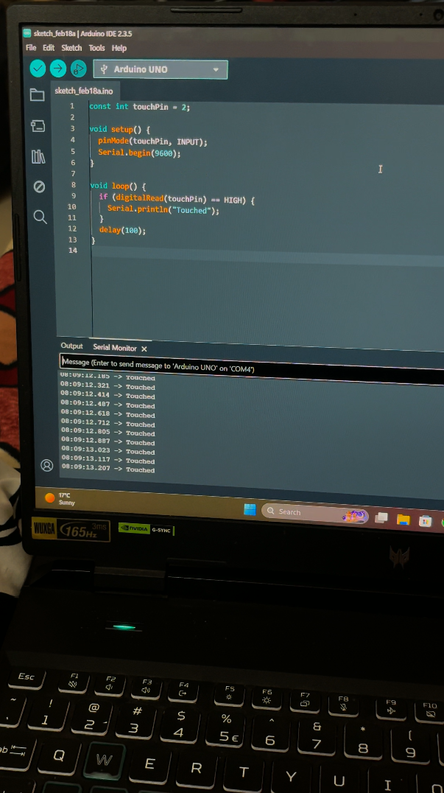
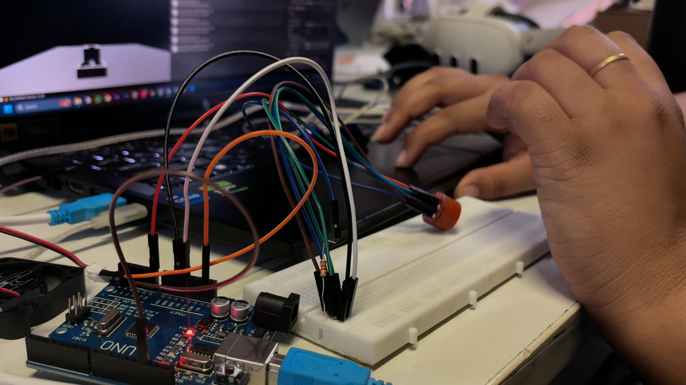
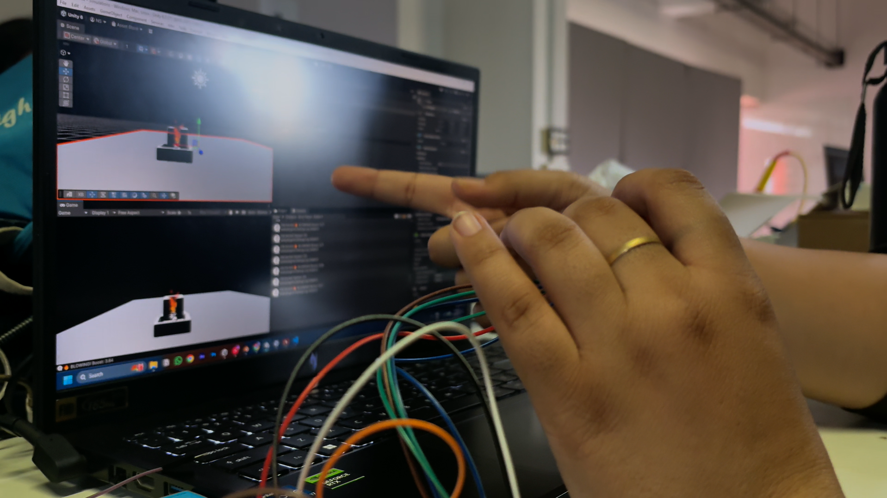
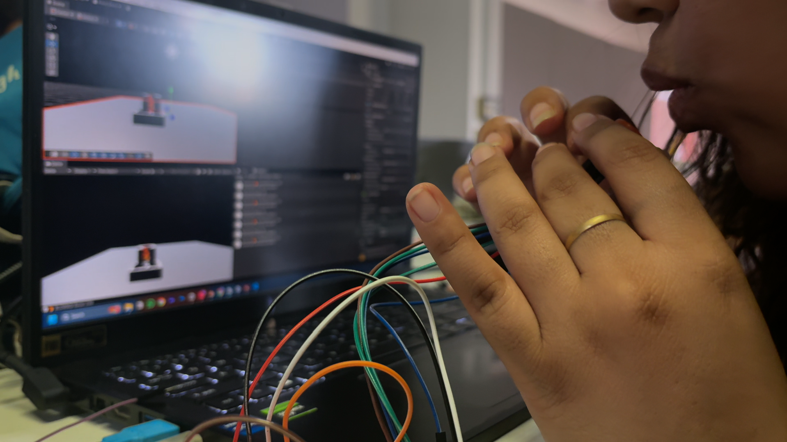
After forming the narrative we started getting our hands dirty — figuring out how to transfer parameters from actual fire into Unity so the interaction could respond. We tried a flame sensor first to capture real heat. Irregular readings, didn't work. Then we switched to a CO sensor — it recognised breath. You might wonder why not CO2 — we tried, but it wasn't sensitive enough. CO worked.
the space
Simultaneously we were modelling the space in Blender — geometry, textures, lighting — and then bringing it into Unity for interaction and sound design.
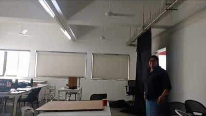
For the physical space, we put up black curtains around a square enclosure — to cut out light and trap heat inside, replicating something close to a kitchen. We built a small chimney to let the smoke out. The tables and objects were placed according to the height of a child, so the space felt large and just out of reach. We then mapped this physical space to the VR environment — every object at the same coordinates in both worlds, so your body and the child's perspective occupy the same point in space.
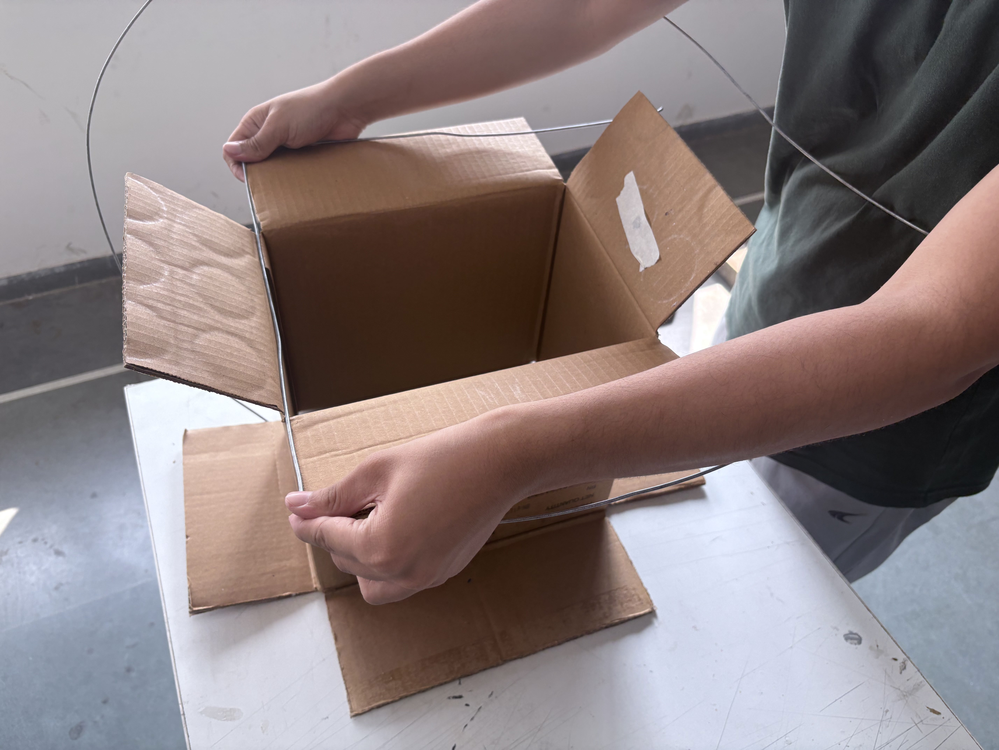
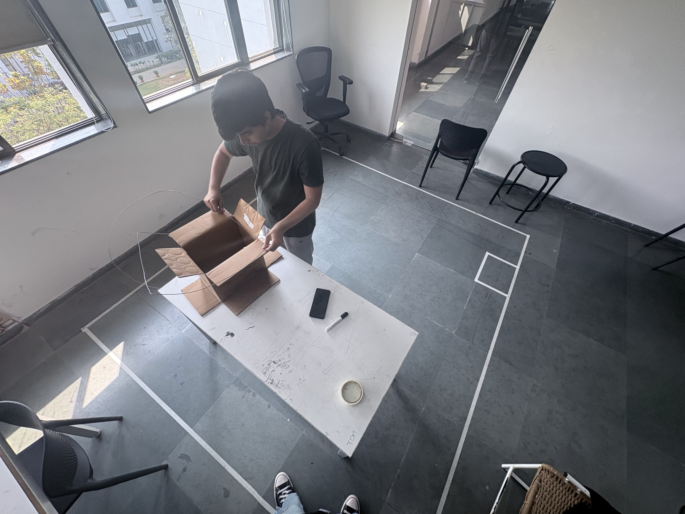
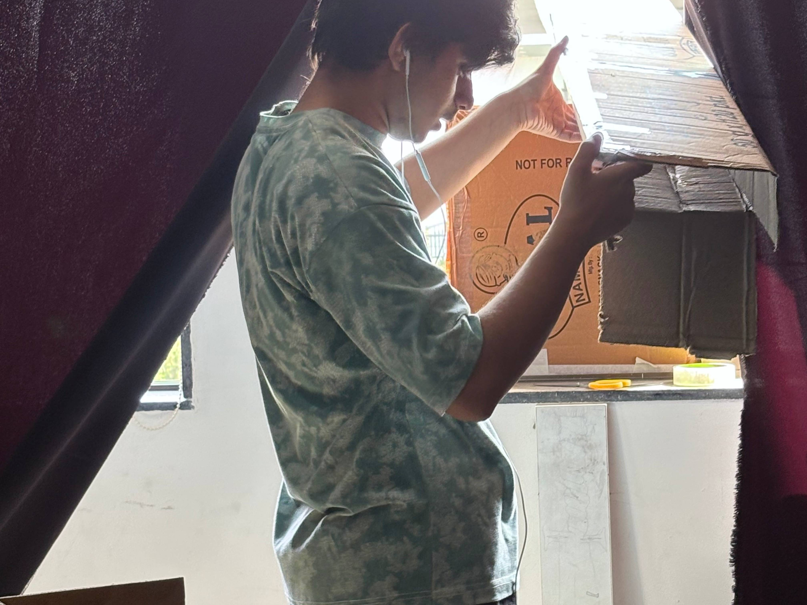
Projection mapping let the audience see what was happening inside the VR — the physical and virtual space running together in the same room.